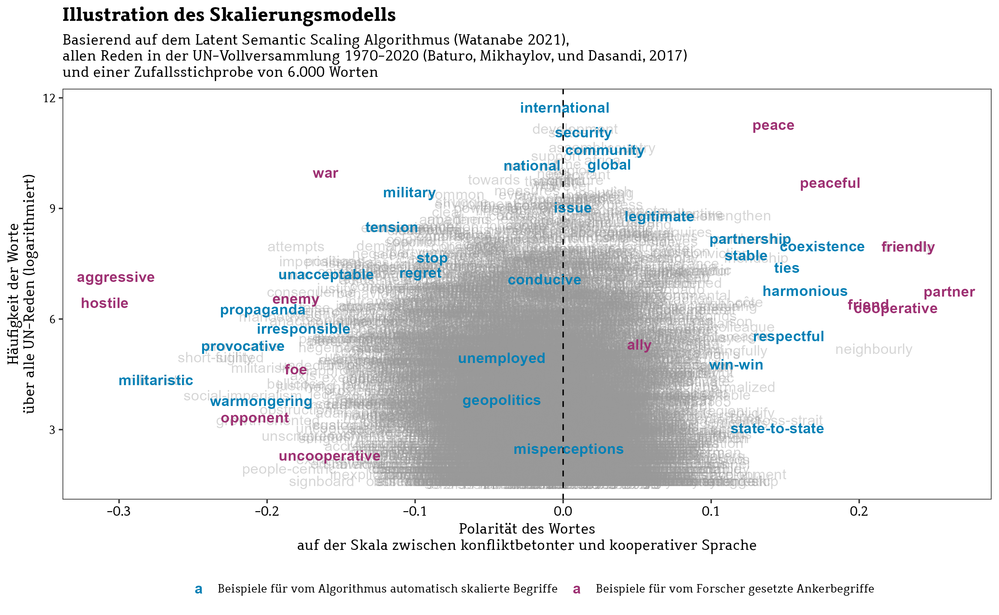
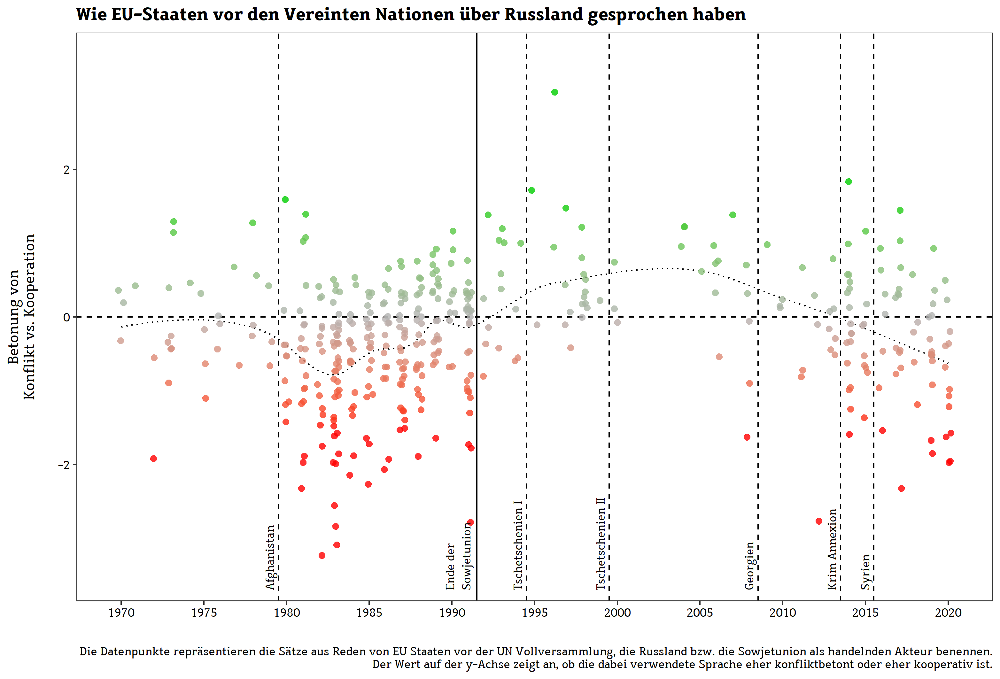
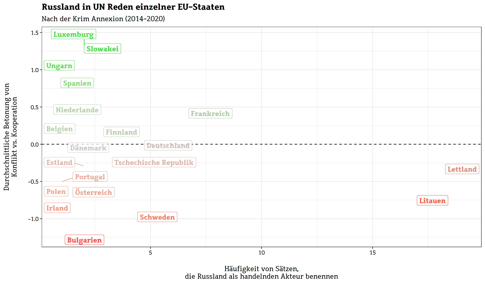

Widersprüchliche Signale
Wie EU-Staaten vor dem Ukrainekrieg über Russland sprachen
Spätestens seit dem russischen Angriff auf die Ukraine häufen sich die Vorwürfe an die Europäische Union, dass sie in den Jahren zuvor nicht genug klare Kante gegenüber Russland gezeigt habe. Lassen sich diese Vorwürfe belegen? Zur Beantwortung dieser Frage haben die Autoren sämtliche Reden von EU-Mitgliedstaaten vor der Vollversammlung der Vereinten Nationen bis 2020 analysiert. Das Bild ist nicht gerade vorteilhaft.
Der russische Angriff auf die Ukraine markierte die Rückkehr von Gewalt in die zuletzt von Handel, Vernetzung und Verrechtlichung geprägte Politik auf dem europäischen Kontinent. Die anschließende Verurteilung und Sanktionierung Russlands in Europa wurde von politischen Beobachtern weithin begrüßt; gleichwohl zeigten sich viele auch überrascht von der großen Einigkeit des „Westens“ und vor allem der EU-Mitgliedstaaten. Denn die Europäische Union wird bis heute trotz ihrer großen ökonomischen Bedeutung oft als außenpolitischer Zwerg wahrgenommen. Die divergierenden Interessen der Mitgliedstaaten und die mangelnde Institutionalisierung außenpolitischer Koordination führten immer wieder zu dem Eindruck, dass die Union nur unklare und bestenfalls schwache Signale an die Weltöffentlichkeit sende.
Dies gilt auch mit Blick auf die Ukraine. Die unklare Positionierung der EU in Reaktion auf frühere russische Aggressionen – man denke an den zerstörerischen zweiten Tschetschenienkrieg, die brutalen Interventionen in Georgien und Syrien sowie insbesondere die militärische Annexion der Krim – könnten, so der Vorwurf vieler politischer Kommentare, Putin zu der Erwartung verleitet haben, dass sich die politischen und wirtschaftlichen Folgen eines Angriffs in Grenzen halten würden. Nun wird vermutlich im Dunkeln bleiben, was am Ende den Ausschlag für Putins Kriegsentscheidung gegeben hat. Aber wir können untersuchen, ob es die vermutete europäische Zurückhaltung wirklich gegeben hat. Lässt es sich nachweisen, dass es die EU-Mitgliedstaaten versäumt haben, sich mit deutlichen geeinten Signalen gegen frühere russische Aggressionen zu positionieren?
Wir sind dieser Frage auf Basis eines Volltextkorpus nachgegangen, der alle Reden vor der Vollversammlung der Vereinten Nationen bis 2020 enthält. In diesem zentralen Forum der Weltpolitik haben alle Regierungen jedes Jahr die Chance, ihre außenpolitischen Prioritäten und Positionierungen vor der Weltöffentlichkeit kundzutun. Die Reden von EU-Mitgliedstaaten auf dieser Bühne enthalten also wertvolle Informationen über die Konsistenz und Stärke der Signale von der EU an Russland im Zeitverlauf. Wir extrahieren diese Informationen mit modernen Algorithmen der natürlichen Sprachverarbeitung. Im ersten Schritt nutzen wir ein ‚semantic role labelling‘-Verfahren, um alle Sätze zu identifizieren, in denen Russland (bzw. die Sowjetunion als dessen Vorgängerstaat) als handelnder Akteur benannt wird.
Im zweiten Schritt skalieren wir die Sprache dieser Sätze mit einem Wortvektormodell entlang ihrer semantischen Ähnlichkeit zu konfliktbetonten und kooperativen Begriffen in der diplomatischen Kommunikation (u.a. z.B. ‚Feind/Freund‘, ‚Krieg/Frieden‘, ‚aggressiv/kooperativ‘ usw.). Eine Zufallsstichprobe von 150 Sätzen zeigt, dass sich diese Skalierung weitgehend mit der Interpretation zweier menschlicher Kodierer deckt.

Die folgende Abbildung fasst zusammen, was uns dieser Ansatz über die Signale aller EU-Mitgliedsstaaten in Richtung Russland im Zeitverlauf verrät.

EU-Mitgliedsstaaten haben Russland bzw. die Sowjetunion vor allem nach der Invasion in Afghanistan 1979 und der darauffolgenden letzten Hochphase des Kalten Kriegs als handelnden Akteur auf der Weltbühne benannt. Diese Signale waren nicht nur häufig, sondern auch stark konfliktbetont. Teilweise liegen die Werte unseres Skalierungsmodels fast drei Standardabweichungen unter der durchschnittlichen Konflikthaftigkeit der fast einer Million gesprochenen Sätze in der UN-Vollversammlung.
Dies ändert sich schlagartig mit dem kurz nach dem Austritt der Ukraine erfolgten Zusammenbruch der Sowjetunion 1991. Ab diesem Zeitpunkt sprachen EU-Mitliedstaaten vor der UN deutlich seltener über Russland. Und wenn sie es taten, sandten sie klar kooperative Signale. Für unsere Frage besonders bedeutsam: An diesem schwach kooperativen Signal der EU-Mitglieder an Russland änderte weder der erste noch der zweite Tschetschenienkrieg etwas. Nach den verheerenden Bildern des zerbombten Grosny im Jahr 2000 schweigen EU-Regierungen in diesem zentralen Forum der Weltpolitik gegenüber Russland und senden ab 2003 sogar wieder vereinzelt kooperative Signale. In einer Welt, in der politische Rhetorik abschreckenden Charakter durch klare Positionierungen haben kann, kommt das Schweigen auf dieser zentralen Weltbühne einem Signal der Gleichgültigkeit nahe.
Die internationale Kommunikation der EU-Staaten dreht sich erst langsam mit der russischen Intervention im Kaukasuskrieg 2008 und dann vor allem mit der Annexion der Krim 2014 und der Intervention in Syrien 2015. Die rhetorische Priorisierung von Russland als handelndem Akteur nimmt in EU-Reden wieder deutlich zu und tendiert im Mittel zu eher konfliktbetonten Signalen.
War die Krim also der notwendige Weckruf, den es brauchte, damit die Regierungen der EU sich zu einer gemeinsamen internationalen Kommunikation an und über Russland aufrafften? Nicht wirklich. Im Vergleich zur Hochphase des Kalten Krieges sprach man ab 2014 immer noch nicht sonderlich häufig über Russland– insbesondere, wenn man bedenkt, dass sich die Anzahl an EU-Mitgliedsstaaten seit den 1980-er Jahren fast verdoppelt hat. Zudem sehen wir eine hohe Bandbereite in der Art, wie EU-Staaten über Russland sprechen: In den drei auf die Krim-Annexion folgenden Jahren finden wir immer noch viele Statements in einer tendenziell kooperativen Sprache. Die folgende Abbildung verdeutlicht, dass dies an einer Divergenz zwischen den einzelnen EU-Regierungen liegt.

Sie zeigt zunächst, dass nur 20 der damals noch 28 EU-Mitgliedstaaten Russland in ihrer jährlich wichtigsten außenpolitischen Rede überhaupt als Akteur benannt haben. Der Großteil dieser Regierungen hat das in den sechs hier beobachten Jahren auch nur ein einziges Mal getan. Und sie setzen Russland dabei oft auch in einen eher kooperativen Kontext – etwa in den wenigen Statements der Regierungen von Luxemburg, der Slowakei oder Ungarn.
Die Regierungen der als führende EU-Nationen verstandenen Staaten Deutschland und Frankreich benannten Russland zwar etwas häufiger als Akteur, nutzten dies aber, um im Mittel eher neutrale bzw. tendenziell kooperative Botschaften zu senden.
Klare Ausreißer sind hingegen die zwischen Russland und Weißrussland eingeklemmten Staaten Litauen und Lettland: Die Regierungen dieser Staaten sprechen vor der UN seit der Krim-Annexion überdurchschnittlich häufig über Russland und benutzen dabei eine deutlich konfliktbetontere Sprache.
Insgesamt stützten die von uns aufgedeckten sprachlichen Muster das Bild einer zwar wirtschaftspolitisch mächtigen Europäischen Union, die es aber als Block auf der Weltbühne lange nicht vermocht hat, mit geeinten und klaren Signalen auf einen internationalen Aggressor zu reagieren. Wir wissen natürlich nicht, ob diese widersprüchlichen Signale Putins Kalkulation über den Preis des Angriffs auf die Ukraine wirklich beeinflusst haben. Aber es spricht einiges dafür – und allein dies sollte die EU ausreichend motivieren, auch in Zukunft auf der Weltbühne mit Einigkeit und klaren Signalen für ihre Werte einzutreten.
Literatur
Baturo, A., Dasandi, N., & Mikhaylov, S. J. (2017). Understanding state preferences with text as data: Introducing the UN General Debate corpus. Research & Politics, 4(2), 2053168017712821. https://doi.org/10.1177/2053168017712821
Watanabe, K. (2021). Latent Semantic Scaling: A Semisupervised Text Analysis Technique for New Domains and Languages. Communication Methods and Measures, 15(2), 81–102. https://doi.org/10.1080/19312458.2020.1832976
Panke, D. (2017). Speaking with One Voice: Easier Said than Done? The EU in the UNGA. In S. Blavoukos & D. Bourantonis (Hrsg.), The EU in UN Politics: Actors, Processes and Performances (S. 27–46). Palgrave Macmillan UK. https://doi.org/10.1057/978-1-349-95152-9_2
Novak, S. (2014). Single Representative, Single Voice: Magical Thinking and the Representation of the EU on the World Stage. Global Policy, 5(s1), 68–75. https://doi.org/10.1111/1758-5899.12147
Links